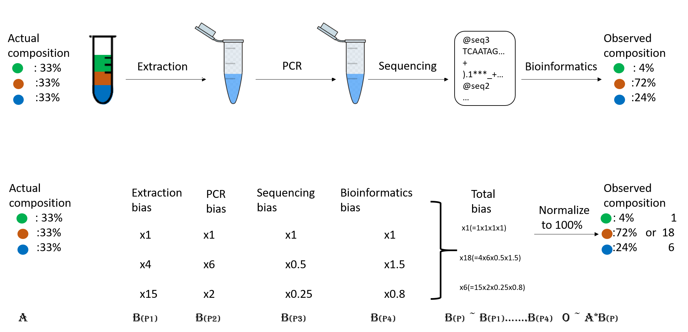

Taxonomic Profiling#
The investigation of microorganisms present at a specific site and their relative abundance is also called “microbial community profiling”. The main objective is to identify the microorganisms that are present within the given sample. This can be achieved for all known microbes, where the DNA sequence specific for a certain species is known.
For that we try to identify the taxon to which each individual read belongs.
What is Taxonomy ?#
Taxonomy is the method used to naming, defining (circumscribing) and classifying groups of biological organisms based on shared characteristics such as morphological characteristics, phylogenetic characteristics, DNA data, etc. It is founded on the concept that the similarities descend from a common evolutionary ancestor.
Defined groups of organisms are known as taxa. Taxa are given a taxonomic rank and are aggregated into super groups of higher rank to create a taxonomic hierarchy. The taxonomic hierarchy includes eight levels: Domain, Kingdom, Phylum, Class, Order, Family, Genus and Species.
What is a taxonomic assignment?#
A taxonomic assignment is a process of assigning an Operational Taxonomic Unit (OTU, that is, groups of related individuals) to sequences that can be reads or contigs. Sequences are compared against a database constructed using complete genomes. When a sequence finds a good enough match in the database, it is assigned to the corresponding OTU. The comparison can be made in different ways.
Strategies for taxonomic assignment#
There are many programs for doing taxonomic mapping, and almost all of them follow one of the following strategies:
-
BLAST: Using BLAST or DIAMOND, these mappers search for the most likely hit for each sequence within a database of genomes (i.e., mapping). This strategy is slow.
-
Markers: They look for markers of a database made a priori in the sequences to be classified and assigned the taxonomy depending on the hits obtained.
-
K-mers: A genome database is broken into pieces of length k to be able to search for unique pieces by taxonomic group, from a lowest common ancestor (LCA), passing through phylum to species. Then, the algorithm breaks the query sequence (reads/contigs) into pieces of length k, looks for where these are placed within the tree and make the classification with the most probable position.
 Figure 1. Lowest common ancestor assignment example.
Figure 1. Lowest common ancestor assignment example.
Abundance bias#
When you do the taxonomic assignment of metagenomes, a key result is the abundance of each taxon or OTU in your sample. The absolute abundance of a taxon is the number of sequences (reads or contigs, depending on what you did) assigned to it. Moreover, its relative abundance is the proportion of sequences assigned to it. It is essential to be aware of the many biases that can skew the abundances along the metagenomics workflow, shown in the figure, and that because of them, we may not be obtaining the actual abundance of the organisms in the sample.
 Figure 2. Abundance biases during a metagenomics protocol.
{kind=link}
Discussion: Taxonomic level of assignment#
What do you think is harder to assign, a species (like E. coli) or a phylum (like Proteobacteria)?
Data used#
we will use the 2 datasets that we previously filtered and trimmed:
JP4D: a microbiome sample collected from the Lagunita Fertilized Pond JC1A: a control samples from a control mesocosm.
Using k-mer based approach, with the tool Kraken 2#
Kraken 2 is the newest version of Kraken, a taxonomic classification system using exact k-mer matches to achieve high accuracy and fast classification speeds.
Kraken 2 is available on Galaxy. We will follow this tutorial : (https://training.galaxyproject.org/training-material/topics/microbiome/tutorials/taxonomic-profiling/tutorial.html)
Compute the species abundance, using Bracken#
Several accurate methods have appeared that can align a sequence “read” to a database of microbial genomes rapidly and accurately (like Kraken2), but this step alone is not sufficient to estimate how much of a species is present. Complications arise when closely related species are present in the same sample–a situation that arises quite frequently–because many reads align equally well to more than one species. This requires a separate abundance estimation algorithm to resolve.
How it works : - 1)You first run Kraken, which assigns each DNA read to a species, genus, or higher-level taxon. - 2) Bracken takes the initial classification from Kraken and adjusts the counts to give a more accurate estimate of the number of reads from each species. Bracken looks at the assignments from Kraken and uses a statistical model to estimate the true abundance of species. 3) It outputs a table of species names and estimated counts or proportions.
 Figure 2. Uses of Bracken on true abundace reestimation
Figure 2. Uses of Bracken on true abundace reestimation